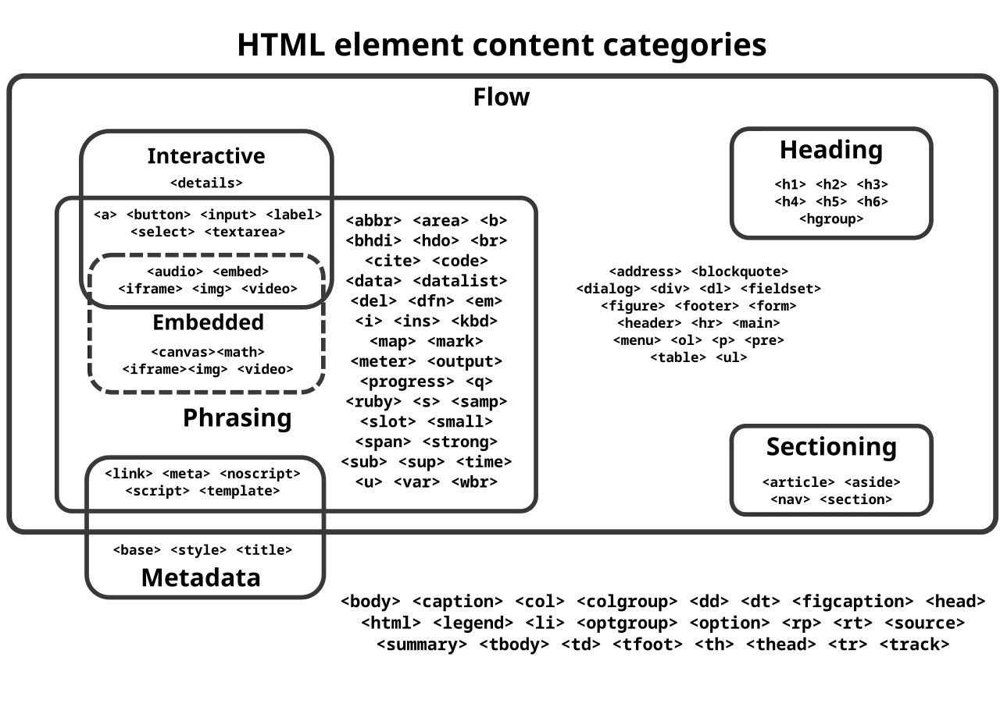

短答
语义 HTML 使用说明区块是什么的元素：标题、列表、导航、文章。
爬虫和浏览器都能读 div，但 div 不会说这一行是产品的标题。标题元素会。类别图是元素可以包含什么的地图，那是技术约束，不是排名系统。SEO 健康关心 H1 是页面的主题，以及零件列表是列表。
定义
重复口号的多个 H1，或因为 CSS 类而从 H2 跳到 H5 的标题层级，会做出与页面不符的大纲。给类加样式。层级保持诚实。main 和 nav 等地标在只有一个 main 时有帮助。它们不能代替回答买家的句子。
页面基础里包括什么
用一个 H1 表示主题，用真正的列表表示重复项目，用地标匹配可见区域。
看起来像链接的按钮和看起来像按钮的链接，会同时扰乱操作和抓取。目的地是 URL 的，应该是 HTML 里带 href 的锚点。只切换状态的控件可以是按钮。审计读的是元素，不是颜色。

要检查什么
- 一个陈述页面主题的 H1
- 跟随大纲的标题层级
- 列表被标记为列表
- 目的地是带 href 的锚点
- 从 HTML 阅读的一条产品 URL 的大纲
一个结构示例
规格“标题”是一个大字号的 div，真正的 H1 是每个 URL 页眉里的公司口号。修复是把 H1 移到产品名，并把规格组变成正确层级的标题。口号可以留作标志，而不是 H1。
它不声称什么
语义元素不保证排名或引用。
Mika Visibility 把它归到哪里
Mika Visibility 把标题、标题层级、语言和媒体基础归在 SEO 健康的内容与结构检查里。它们帮助页面被理解。它们不是 SEO 增长——增长问的是还缺什么覆盖——它们也不保证回答产品会引用这个页面。
类别图说的是元素可以包含什么，因此文章谈的是结构而不是分数。
常见问题
语义 HTML 命名什么？
语义 HTML 使用说明区块是什么的元素：标题、列表、导航、文章。
H1 应该陈述什么？
用一个 H1 表示主题，用真正的列表表示重复项目，用地标匹配可见区域。
语义元素能保证排名吗？
语义元素不保证排名或引用。
下一步
做一次结构化的 SEO + GEO 审计，查看健康发现、增长缺口和可以执行的蓝图。
更清晰的实体、答案、证据和上下文，会让页面更容易被理解与引用。任何回答产品中的结果都不作保证。